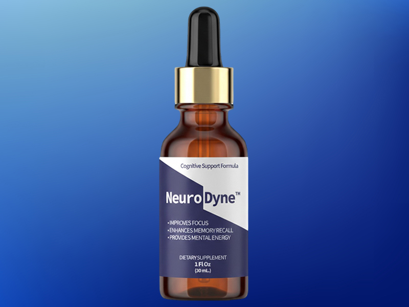

Many adults over 40 notice changes in their memory and cognitive sharpness as they age. It often starts subtly — a name that takes a moment longer to recall, a book chapter that does not quite stick. These everyday moments are normal parts of aging, but many people are looking for ways to support their cognitive health proactively.
Here is the hard truth that nobody talks about at dinner parties: natural changes in memory and retention can occur gradually over time. Not your intelligence. Not your capacity to learn. Your ability to hold onto what you have already learned.
According to cognitive researchers, the average adult retains less than 25% of new information after just 48 hours. By the end of a week, that number drops to single digits. You are not imagining it. The book you finished on Sunday feels like a distant rumor by Friday. The name of the person you met at Tuesday's meeting is gone by Wednesday morning.
This is not dementia. This is not a disease. This is the natural erosion of memory consolidation — and it accelerates dramatically after age 40. The neural pathways responsible for encoding and preserving memories become less efficient. Neurotransmitter production slows. The hippocampus, your brain's retention center, begins to shrink at a rate of roughly 0.5% per year.
Think about what that means in practical terms. A professional who cannot retain the details of a client meeting. A parent who forgets the instructions the teacher gave last week. A retiree who reads the same article twice because the first time left no impression. These changes are a natural part of aging — and a growing number of people are exploring wellness routines that may help support cognitive function.
The supplement industry has spent decades selling "focus" and "clarity." But focus without retention is like filling a bucket with holes. You can concentrate all you want — if the information does not consolidate and lock into long-term storage, it is gone.
The question is not whether retention fades. The question is whether you are going to do something about it.
Memory retention is not a single process. It requires successful encoding, consolidation, and retrieval. When any of these stages falters, information slips through the cracks. Your brain needs the right biochemical environment to lock new data into place — adequate neurotransmitters, healthy blood flow to the hippocampus, and protection against the oxidative stress that damages neural connections over time.
Two pillars can shore up the entire system:
During deep sleep, the brain replays and consolidates the day's memories. Poor sleep quality sabotages this process at its core. Chronic stress floods the hippocampus with cortisol, physically impairing the neurons responsible for long-term storage. Without proper recovery, no amount of studying or repetition will lock information into place.
Certain natural compounds have been studied for their ability to support the biochemical processes behind memory encoding and retention. Bacopa Monnieri, Ginkgo Biloba, and L-Theanine are among the most researched. They work at the neurotransmitter level — supporting acetylcholine production, improving cerebral blood flow, and protecting neural pathways from oxidative decay.
NeuroDyne is a dietary supplement formulated with a direct purpose: to support the brain's ability to encode, consolidate, and preserve memories. It is not a miracle pill. It is not a shortcut. It is a carefully assembled formula of researched ingredients that target the specific biological mechanisms behind memory retention.
Each capsule delivers a concentrated blend of Bacopa Monnieri, Ginkgo Biloba, L-Theanine, Panax Ginseng, and Vitamin B Complex — ingredients that have appeared in peer-reviewed cognitive research for decades. Together, they support the neurotransmitter activity, blood flow, and cellular protection that your aging brain needs to hold onto what it learns.
The difference between NeuroDyne and generic "brain boosters" is specificity. Most nootropic products throw a dozen ingredients at the wall and hope something sticks. NeuroDyne targets the three-stage retention process directly: encoding (getting information in), consolidation (locking it down), and retrieval (getting it back when you need it).
NeuroDyne does not claim to give you a photographic memory. What it offers is nutritional support for the retention machinery that time and biology have been quietly dismantling.
Supplementation alone is not a strategy. It is one weapon in a larger arsenal. Here is the four-step protocol that cognitive health experts recommend for people serious about preserving what they learn:
Take one serving of NeuroDyne with breakfast. The Bacopa and Ginkgo begin supporting acetylcholine production and cerebral blood flow within the first hour, priming your brain for the day's encoding demands.
Dehydration impairs cognitive function faster than most people realize. Combine steady water intake with active recall exercises — close the book and try to reconstruct what you read. This forces the hippocampus to strengthen retrieval pathways rather than passively re-absorbing text.
Before bed, spend 10 minutes reviewing the most important things you learned that day. Write them down or speak them aloud. This pre-sleep review primes the brain for overnight memory consolidation during slow-wave and REM sleep cycles.
Seven to nine hours of uninterrupted sleep is non-negotiable for memory retention. During deep sleep, the brain physically transfers short-term memories from the hippocampus to the neocortex for long-term storage. Cut your sleep short, and you cut your retention in half.
Not every cognitive supplement delivers. Not every lifestyle hack moves the needle. Here is an honest breakdown:
Your memories are worth preserving. Every conversation, every book, every important moment deserves to stay with you — not as a vague impression, but as a crisp, retrievable record that you can access whenever you need it. NeuroDyne was built for exactly that purpose.
Get NeuroDyne — Start Retaining
A targeted blend of researched botanicals designed to support how your brain encodes, consolidates, and preserves information.
Formulated in a GMP-certified, FDA-registered facility in the United States. Each batch is third-party tested for purity and potency.
Key Ingredients:The studies below were conducted on individual ingredients, not on the NeuroDyne product itself. These references are provided for informational purposes only.
Stough C, et al. (2008). Examined the chronic effects of an extract of Bacopa monnieri (Keenmind) on cognitive function, reporting significant improvements in working memory and attention.
PubMed: 18683852Stough C, et al. (2001). A randomized, double-blind, placebo-controlled study showing that chronic Bacopa monnieri supplementation produced significant effects on cognitive function in healthy older adults.
PubMed: 11498727Raghav S, et al. (2006). A clinical trial of a standardized Bacopa monnieri extract in subjects with age-associated memory impairment (AAMI), demonstrating significant improvements in multiple memory parameters.
PMC: PMC2915594Haskell CF, et al. (2008). Investigated the acute effects of L-theanine, caffeine, and their combination on cognition and mood, finding that the combination improved attention and task-switching accuracy.
PubMed: 18006208Owen GN, et al. (2008). Demonstrated that the combination of L-theanine and caffeine improved both speed and accuracy of performance on an attention-switching task, and reduced susceptibility to distracting information.
PubMed: 18681988Crook TH, et al. (1991). A multicenter, randomized, double-blind, placebo-controlled trial showing that phosphatidylserine supplementation improved cognitive performance in subjects with age-associated memory impairment.
Neurology: 41(5):644